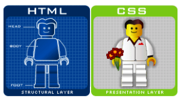

O CSS é uma linguagem de folha de estilo composta por “camadas”, criado com o propósito de estilizar as páginas HTML, ou seja, definir a aparência das páginas, para deixá-las visualmente mais bonitas e agradáveis, podendo alterar a fonte, cor, posicionamento dos elementos, layout e muito mais.
CSS: é chamado de linguagem Cascading Style Sheet
Com seus conhecimentos em HTML e CSS, ficará mais fácil explicar à equipe de TI as alterações que precisam ser feitas e os erros que devem ser corrigidos. Você conseguirá se comunicar de forma mais clara e objetiva